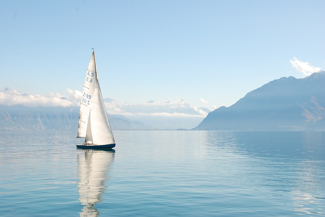

<nz-layout>
    <nz-header>
      <div class="logo">
         
      </div>
      <ul nz-menu nzTheme="dark" nzMode="horizontal">
        <li nz-menu-item>Home</li>
        <li nz-menu-item>Table</li>
        <li nz-menu-item disable >Graphs
        </li>
      </ul>
    </nz-header>
    <nz-content>
      <nz-breadcrumb>
        <nz-breadcrumb-item>Home</nz-breadcrumb-item>
        <nz-breadcrumb-item>Table
        </nz-breadcrumb-item>
      </nz-breadcrumb>
      <div class="inner-content">Content
          
      </div>
    </nz-content>
    <nz-footer>Eleanor Casson https://github.com/ESCasson/instruments</nz-footer>
  </nz-layout>
